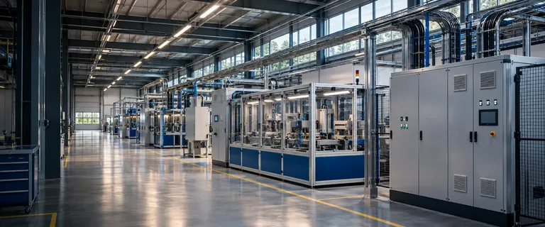
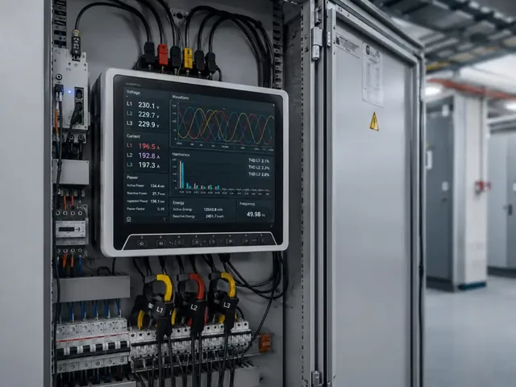
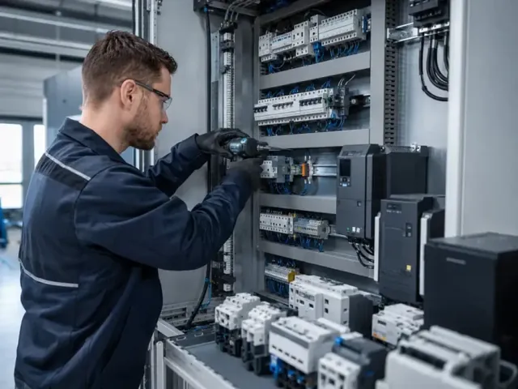
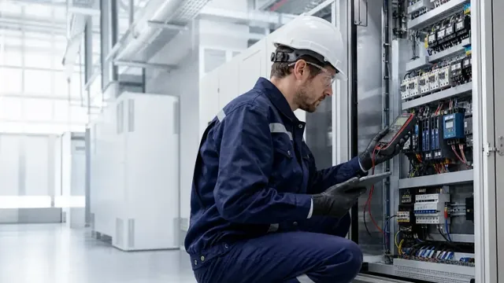
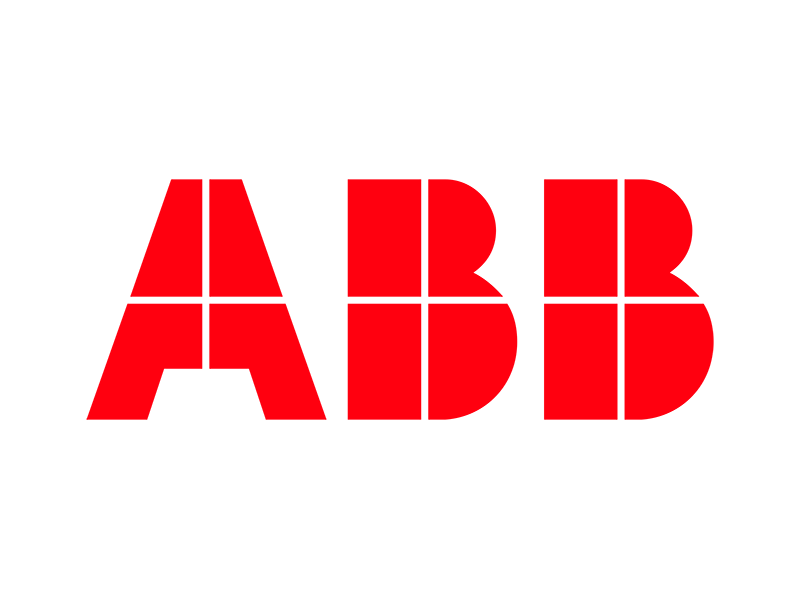
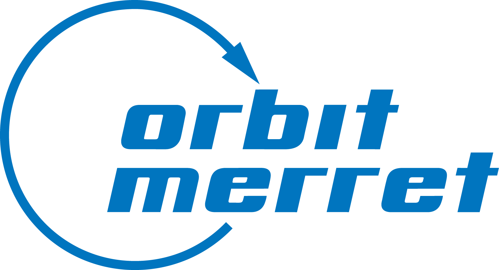
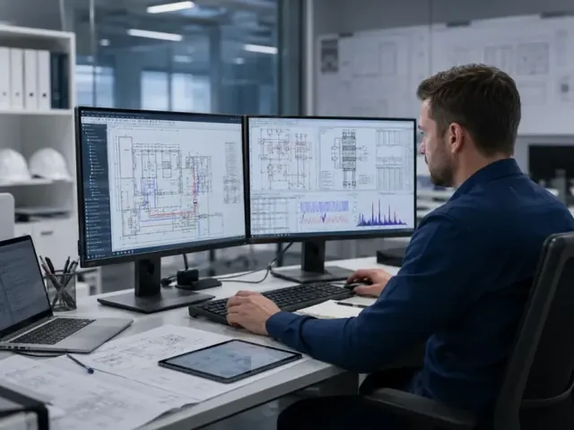
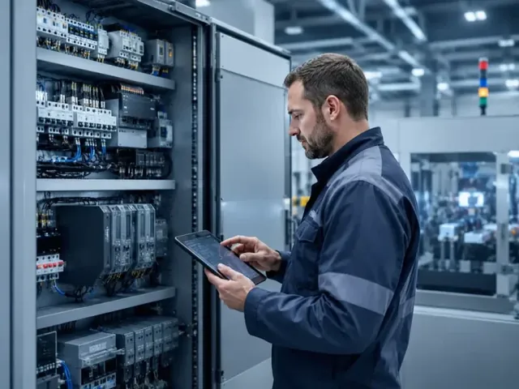

Průmyslová elektrotechnika
Elektro pro váš
výrobní provoz.
Změříme spotřebu, navrhneme řešení a postaráme se o instalaci, servis i revize.

Rychlé cesty podle potřeby
Měření, analýza a projekt rozvodů.
Technologie, záložní zdroje a instalace.
Servis, prohlídky a revize technologií.
Služby podle potřeby
Co potřebuje váš provoz?
Měření, analýza a projekt
Měření kvality elektrické sítě, analýza množství energie a optimalizace spotřeby.
Projekce rozvodů pro výrobní haly, návrh layoutu a simulace spotřeby energie.

Technologie a instalace
Elektrotechnologie, monitorování a řízení spotřeby, záložní zdroje a bateriové úložiště.
Instalace dodaných technologií, doplnění, přesuny a přestavby technologických linek.

Servis a revize
Servis nainstalovaných technologií, pravidelné prohlídky, záruční i pozáruční servis.

Modelové reference
Jak vypadá zadání, postup a rozsah
Ilustrační zadání pro ukázku webu, nejde o uskutečněné zakázky rqpower.
Měření spotřeby výrobního provozu
Modelové zadání: výrobní provoz chce zjistit, kde a kdy spotřebovává elektrickou energii. Ukázka postupu od měření kvality sítě po návrh opatření.

Elektroinstalace nové výrobní linky
Modelové zadání: do provozu přibývá nová výrobní linka. Ukázka postupu od návrhu rozvodů přes instalaci technologií po výchozí revizi.

Servis a revize rozvaděčů
Modelové zadání: provoz potřebuje pravidelně kontrolovat a udržovat rozvaděče a další elektro technologie. Ukázka servisu a revizí v péči o provoz.
Značky a partneři
Spolupracujeme s předními technologickými značkami






Jak spolupracujeme
Jeden partner pro celý proces.
Pracujeme s reálnými daty, navrhujeme funkční řešení a zajišťujeme komplexní péči: realizace, servis i revize pod jednou střechou.
01
Posouzení a měření
Důkladné posouzení aktuálního stavu a potřeb zákazníka, měření kvality sítě a spotřeby.
02
Návrh a projekt
Na základě naměřených dat a odborného vyhodnocení navrhneme technické řešení a připravíme projektovou dokumentaci.
03
Dodávka a instalace
Dodáme technologie a zajistíme realizaci řešení.
04
Servis a revize
Staráme se o údržbu, kontrolu a další rozvoj instalovaných technologií.
Články
Praktické texty ke krokům spolupráce.
Co připravit pro analýzu spotřeby
Stručný přehled toho, co stačí popsat před první konzultací a co analýza spotřeby podle popisu služby zahrnuje.

Od návrhu k instalaci
Jak na sebe navazují projekt a instalace: od naměřených dat přes návrh řešení až po realizaci technologií.

Servis a revize v péči o provoz
Co zahrnuje servis a revize a proč jsou součástí péče o provoz instalovaných technologií.
Časté otázky
Rychlé odpovědi před prvním hovorem.
Nenašli jste, co hledáte? Ozvěte se nám přímo.
Jaké služby rqpower zajišťuje?
Zajišťujeme šest služeb: analýzu spotřeby, elektroprojekční činnost, dodávky technologií, instalaci, servis a revize. Podrobný popis najdete na stránce Služby.
Kde působíte?
Jsme česká společnost a působíme po celé ČR. Snažíme se být vždy nablízku, abychom Vám poskytli ten nejlepší možný servis.
Jak spolupráce probíhá?
Každý projekt začínáme důkladným posouzením aktuálního stavu a potřeb zákazníka. Na základě naměřených dat navrhneme řešení, připravíme projektovou dokumentaci a zajistíme realizaci. Následně se staráme o údržbu, kontrolu a další rozvoj instalovaných technologií.
Komu zavolat?
Obchod (nová zakázka nebo nabídka): +420 739 762 050. Podpora (technický dotaz): +420 734 562 532. Servis (oprava nebo údržba zařízení): +420 739 617 917. Obecný kontakt: info@rqpower.cz.
Co poslat před první konzultací?
Doporučujeme stručně popsat provoz nebo technologii, co chcete řešit (spotřebu, novou instalaci, servis nebo revizi) a jak vás můžeme kontaktovat. Pokud máte po ruce dokumentaci nebo výsledky dřívějšího měření, můžete je zmínit.
Probereme váš provoz.
Zavolejte přímo lidem, kteří řeší vaši zakázku, nebo pošlete krátkou poptávku.